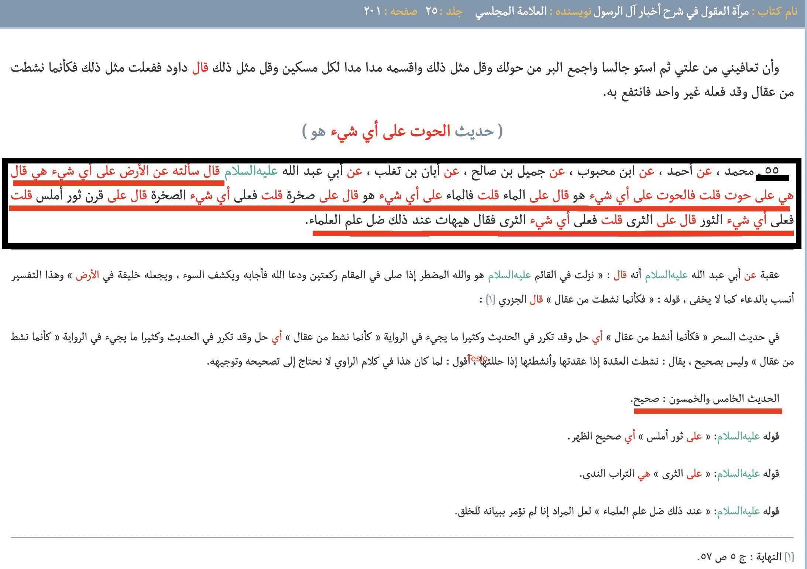
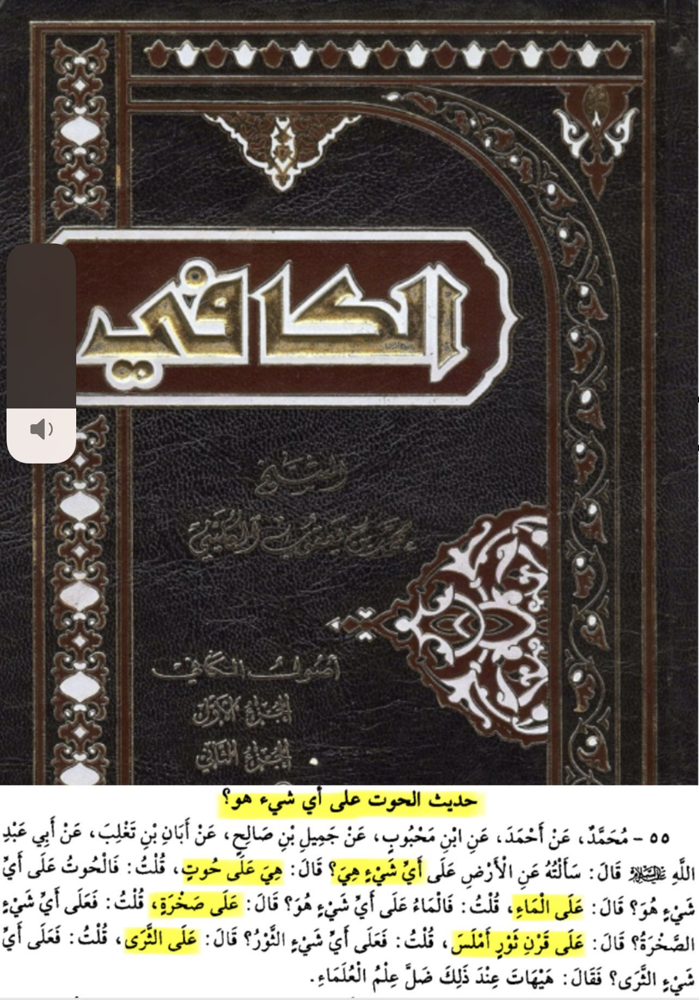
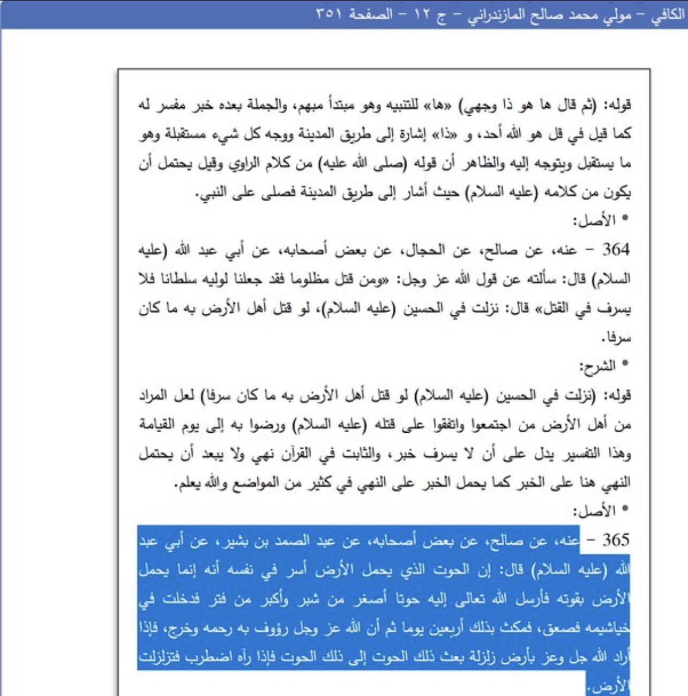
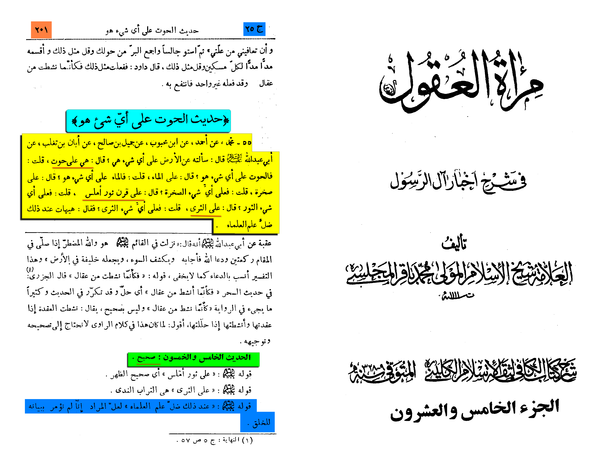

محمد عن أحمد عن ابن محبوب عن جميل بن صالح عن أبان بن تغلب عن أبي عبد الله (ع) قال: سألته عن الأرض على أي شيء هي؟ قال: هي على حوت قلت: فالحوت على أي شيء هو؟ قال: على الماء قلت: فالماء على أي شيء هو؟ قال: على صخرة قلت: فعلى أي شيء الصخرة؟ قال: على قرن ثور أملس قلت: فعلى أي شيء الثور؟ قال: على الثرى قلت: فعلى أي شيء الثرى؟ فقال: هيهات عند ذلك ضل علم العلما
Muhammad reported from Ahmad, from ibn Mahbub, from Jamil ibn Salih, from Aban ibn Taghlib, from Abu Abdullah i.e. Al-Sadiq, who said, I asked him about the earth, ‘Upon which does it stand forth? To which he replied: “It stands forth upon a whale.” I asked: “Upon which does the whale stand forth? To which he replied: “Upon water.” I asked: “Upon which does water stand forth?” To which he replied: “Upon a rock.” I asked: “Upon which does the rock stand forth?” To which he replied: “Upon a bull’s smooth horn.” I asked: “Upon which does the bull stand forth?” To which he replied: “Upon the ground.” I asked: “Upon which does the ground stand forth?” To which he replied: “What an idea? Therewith is lost the knowledge of the men of knowledge.”
Al Kafi 8/89
Grade: Sahih
(according to al-Majlesi)
al-Majlesi comments that this narration is sahih:
This is confirmed in another narration:

Translation:
From him, from Salih, from one of his companions, from Abdul Samad Bin Basheer, who has reported the following: Abu Abdullah [Sixth Shi’i Imam) has said that: ‘The whale which is carrying the earth secretly said to itself that it is carrying the earth by its own strength. So Allah the High Sent to it a fish smaller than a palm’s length, and larger than a finger. So it entered in its gills and shocked it. It remained like that for forty days. Then Allah Raised it and was Merciful to it, and Took it out. So whenever Allah (azwj) Intends the earth to be in a quake, He Sends that (small) fish to that (big) fish. So when it sees it, it becomes restless, so the earth gets engulfed by the earthquake’.
Al Kafi 12/351
Grade: Daif
(according to al-Majlesi)
The narration is daif due to the chain but it’s meaning is sahih and it is worth mentioning nonetheless.
In Shi’ism, it is attributed to the sixth infallible Shi’i Imam, Jafar as Sidiq (the noble Imam Ja’far ibn Muhammad Al-Sadiq, may Allah have mercy upon him, is innocent of Shi’ism), that the Earth sits upon a whale (which apparently sits upon water, which sits upon a rock which sits upon a bull’s smooth horn which sits upon the ground). Problems occur because this narration is attributed to one of the Shi’is infallible Imam. So, I will ask Shi’is 2 questions:
Does the Earth sit upon a whale?
If you reply no, then doesn’t that mean that Jafar as Sidiq is not infallible?
al-Kulaynī (d. 329 AH) reports in al-Kāfi:
« -55: Abū ʿAbdillāh i.e. al-Ṣādiq, who said, I asked him about the earth, ‘Upon which does it stand forth? To which he replied: “It stands forth upon a whale.” I asked: “Upon which does the whale stand forth? To which he replied: “Upon water.” I asked: “Upon which does water stand forth?” To which he replied: “Upon a rock.” I asked: “Upon which does the rock stand forth?” To which he replied: “Upon a bull’s smooth horn.” I asked: “Upon which does the bull stand forth?” To which he replied: “Upon the ground.” I asked: “Upon which does the ground stand forth?” To which he replied: “What an idea? Therewith is lost the knowledge of the men of knowledge.” »
•📓 [Al-Kāfi (8/89) | 55]
Notable Shiā scholar al-Majlisī (d. 1110 AH) comments on this tradition saying:
« the hadith number 55 is: Ṣaḥīḥ (authentic), as for the meaning of “What an idea? Therewith is lost the knowledge of the men of knowledge” perhaps the meaning is that you weren’t order to reveal it to the creation »
•📖 [Merʾāt al-ʿoqul fi šarḥ aḵbār āl al-rasūl (25/201) | 55]
